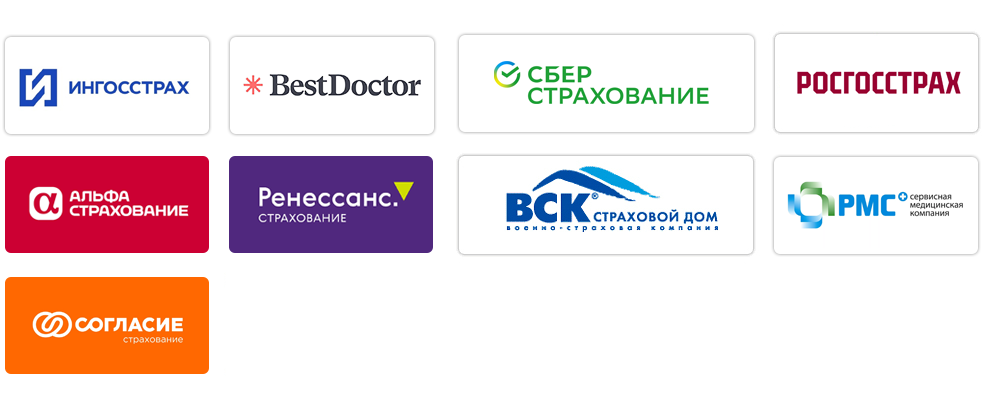
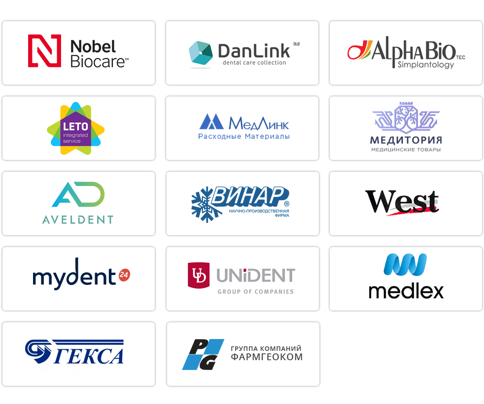

Партнёры – это залог успешного развития любого бизнеса.
Партнёрство – союз заинтересованных сторон с целью взаимовыгоды от долговременного честного сотрудничества. За 18 лет стоматологической практики специалисты клиники «Мой-зубной” приобрели свой собственный опыт плодотворной работы по программам добровольного медицинского страхования (ДМС).
По программам ДМС могут зарегистрироваться как дееспособные физические лица, так и юридические лица, страхующие своих сотрудников. ДМС обеспечивает получение дополнительных медицинских услуг, в том числе и стоматологических, сверх программ обязательного медицинского страхования, гарантированного государством.
Что такое страховая программа?
Страховая программа – это часть страхового договора, которая определяет обязательный объём услуг, согласованный с владельцем полиса. Страховой полис должен покрывать лечение основных стоматологических заболеваний.
Когда можно лечить по страховому полису?
Как правило, лечение проводится только при возникновении страхового случая, то есть при наступлении заболевания. В случае возникновения острой боли, специалисты «Мой-зубной» обеспечат Ваш приём в день обращения.
Всегда ли можно провести лечение в четком соответствии со страховой программой?
Нет, не всегда. Зачастую, врачи ограничены в объеме медицинской помощи, которую они имеют право оказывать пациентам по полисам ДМС и договорам со страховой компанией. Ограничения могут быть связаны с проведением лечения по новейшим технологиям с применением дорогостоящих материалов или необходимости дополнительных услуг, не предусмотренных в страховой программе.
И тогда какой выход?
Выход есть: в ситуации, если страховой случай не наступил, а Вам хочется провести дополнительное лечение или лечение по новейшим методикам, не предусмотренное Вашей страховой программой, наши специалисты предложат Вам оплатить дополнительные услуги или материалы самостоятельно наличными или безналичным путем в кассу клиники.
На сегодняшний день по программам ДМС мы успешно сотрудничаем с ведущими страховыми компаниями:
Партнёры-поставщики медицинской продукции
Если Вы застрахованы по системе ДМС, и Ваша страховая компания не указана в нашем списке, но Вы желаете обслуживаться в «Мой-зубной», обратитесь к представителю своей страховой компании с предложением о сотрудничестве с нашей клиникой. Учтите, что в каждой компании существует индивидуальная программа страхования, в рамках которой регламентируется оплата стоматологических услуг. Чем шире программа, тем больший спектр стоматологических услуг Вы сможете получить по системе ДМС. После заключения договора Вас с радостью примут наши специалисты.